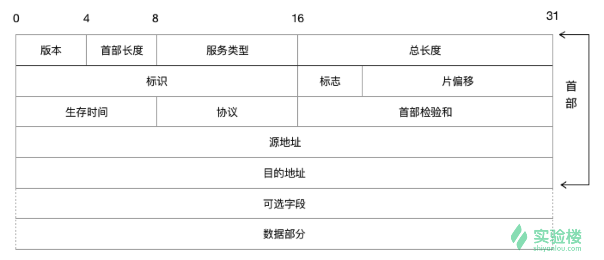
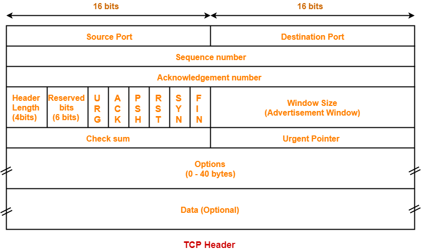
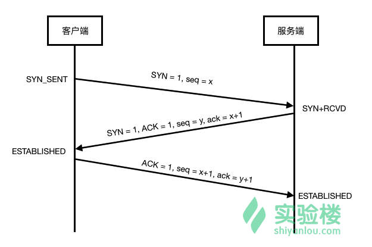
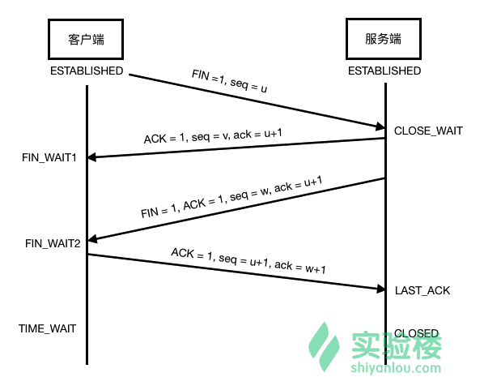

学习TCP/IP数据报的结构
推荐课程
IP
IP简介

普通的 IP 数据报的报头长度 20 字节(除非有选项字段)，各个部分的作用：
- 版本号 ：4 位，用于标明 IP 版本号，0100 表示 IPv4，0110 表示 IPv6。目前常见的是 IPv4。
- 首部长度 ：4 位，表示 IP 报头长度，标识头部有多少个4字节，包括选项字段。
- 服务类型(TOS) ：8位，分别有：最小时延、最大吞吐量、最高可靠性、最小花费 4 种服务，如下图所示。4 个标识位只能有一个被置为 1。
- 总长度 ：16 位，报头长度加上数据部分长度，便是数据报的总长度。IP 数据报最长可达 65535 字节。
- 标识 ：16 位，接收方根据分片中的标识字段相不相同来判断这些分片是不是同一个数据报的分片，从而进行分片的重组。通常每发送一份报文它的值就会加 1。
- 标志 ：3 位，用于标识数据报是否分片。其中的第 2 位是不分段（DF）位。当 DF 位被设置为 1 时，则不对数据报进行分段处理；第 3 位是分段（MF）位，除了最后一个分段的 MF 位被设置为 0 外，其他的分段的 MF 位均设置为 1。
- 偏移 ：13 位，在接收方进行数据报重组时用来标识分片的顺序。
- 生存时间(TTL) ：8 位，用于设置数据报可以经过的最多的路由器个数。TTL 的初始值由源主机设置（通常为 32 或 64），每经过一个处理它的路由器，TTL 值减 1。如果一个数据报的 TTL 值被减至 0，它将被丢弃。
- 协议 ：8 位，用来标识是哪个协议向 IP 传送数据。ICMP 为 1，IGMP 为 2，TCP 为 6，UDP 为 17，GRE 为 47，ESP 为 50。
- 首部校验和 ：16位 根据 IP 首部计算的校验和码。
- 源 IP 和目的 IP ：32位，数据报头还会包含该数据报的发送方 IP 和接收方 IP。
- 选项 ：是数据报中的一个可变长、可选的信息，不常用，多用于安全、军事等领域。
IP报文分析
1 | sudo tcpdump -ntx -c 1 |
1 | 4500 0038 106d 4000 4006 2c51 7f00 0001 |
使用十六进行表示，一个数字表示四位
- 版本号：0x4 –> IPv4
- 首部长度: 0x5 –> 20字节 –> 160位 –> 40个16进制 –> 10个小段（一直到0001，一段4个十六进制）
- 服务类型：0x00 –> 一般服务
- 总长度：0x0038 –> 56字节 –> 448位 –> 112个16进制 –> 28个小段（相符）
- 标识：0x106d
- 标志：010 不用做分段处理
- 偏移：0 0000 0000 0000 0000
- 生存时间：0x40 –> 64 –> 一般Linux为64
- 协议：0x06 –> 为TCP协议
- 首部校验和：0x2c51
- 源IP：7f000001 –> 127.0.0.1
- 目标IP: 7f000001 –> 127.0.0.1
TCP
TCP简介

- 源端口和目的端口:各占2字节(16bit)，分别写入源端口号和目的端口号。这和 UDP 报头有类似之处，因为都是传输层协议。
- 序号:占4字节(32bit)，序号范围[0，2^32-1]，序号增加到 2^32-1 后，下个序号又回到 0。TCP 是面向字节流的，通过 TCP 传送的字节流中的每个字节都按顺序编号，而报头中的序号字段值则指的是本报文段数据的第一个字节的序号。
- 确认序号:占4字节(32bit)，期望收到对方下个报文段的第一个数据字节的序号。
- 数据偏移:占4位，指 TCP 报文段的报头长度，包括固定的 20 字节和选项字段。
- 保留:占6位，保留为今后使用，目前为 0。
- 控制位:共有 6 个控制位，说明本报文的性质，意义如下：
- URG 紧急:当 URG=1 时，它告诉系统此报文中有紧急数据，应优先传送(比如紧急关闭)，这要与紧急指针字段配合使用。
- ACK 确认:仅当 ACK=1 时确认号字段才有效。建立 TCP 连接后，所有报文段都必须把 ACK 字段置为 1。
- PSH 推送:若 TCP 连接的一端希望另一端立即响应，PSH 字段便可以“催促”对方，不再等到缓存区填满才发送。
- RST复位:若 TCP 连接出现严重差错，RST 置为 1，断开 TCP 连接，再重新建立连接。
- SYN 同步:用于建立和释放连接，稍后会详细介绍。
- FIN 终止:用于释放连接，当 FIN=1，表明发送方已经发送完毕，要求释放 TCP 连接。
- 窗口:占2字节(16bit)。窗口值是指发送者自己的接收窗口大小，因为接收缓存的空间有限。
- 检验和:2字节(16bit)。和 UDP 报文一样，有一个检验和，用于检查报文是否在传输过程中出差错。
- 紧急指针:2字节(16bit)。当 URG=1 时才有效，指出本报文段紧急数据的字节数。
- 选项:长度可变，最长可达 40 字节。具体的选项字段，需要时再做介绍。
TCP报文分析
端口7777 – 2233 –> 端口49386
1 | 4500 0038 106d 4000 4006 2c51 7f00 0001 |
根据之前的分析，TCP部分从1e61开始
- 源端口： 0x1e61 –> 7777
- 目标端口： 0xc0ea –> 49386
- Seq序号： 0x1c88a9f9 –> 478718457
- Ack确认序号：0xd0482bf6 –> 3494390774
- 数据偏移（报文头长度）：0x8 –> 32字节 –> 16小段 –> 一直到倒数第三个为止为报头
- 保留：0000 00
- 控制位：011000
- URG：0
- ACK：1
- PSH：1
- RST：0
- SYN：0
- FIN：0
- 窗口：0x00e5
- 检验和：0xfe2c
- 紧急指针：0x0000
- Options：0101 080a 0017 c23c 8cbd 9fc0
- Data: 3232 3333 –> ‘2’ ‘2’ ‘3’ ‘3’
握手和挥手
运行程序，程序见尾部，Linux环境，并执行如下命令
1 | sudo tcpdump -vvv -X -i lo tcp port 7777 |
握手

1 | 4500 003c 3616 4000 4006 06a4 7f00 0001 |
- :49386 –> :7777 (a002 –> 1010 0000 0000 00 1(SYN) 0)
- Seq：0x3e47f97a (X)
- SYN：1
- :7777 –> :49386 (a012 –> 1010 0000 0001(ACK) 00 1(SYN) 0)
- Seq: 0x9b1013b9（Y）
- Ack: 0x3e47f97b（X+1）
- SYN：1
- ACK：1
- :49386 –> :7777 (8010 –> 1000 0000 0001(ACK) 0000)
- Seq: 0x3e47f97b（X+1 == Ack）
- Ack：0x9b1013ba（Y+1）
- ACK：1
挥手

1 | 4500 0034 6fc9 4000 4006 ccf8 7f00 0001 |
- :49386 –> :7777（8011 –> 1000 0000 000 1(ACK) 000 1(FIN) ）
- Seq：0x39cfc943（U）
- :7777 –> :49386（8011 –> 1000 0000 000 1(ACK) 000 1(FIN) ）
- Seq：0x66401ca7（W）
- Ack：0x39cfc944（U+1）
- ACK：1
- FIN：1
- :49386 –> :7777（8010 –> 1000 0000 000 1(ACK) 0000）
- Seq：0x39cfc944（U+1）
- Ack：0x66401ca8（W+1）
- ACK：1
源码
1 | // server.c |
1 | // client.c |